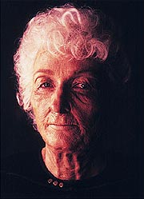
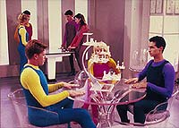
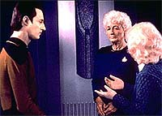
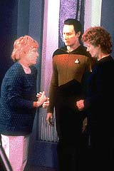
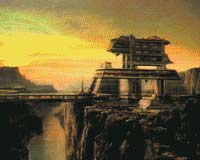

|
MANCHETE
DO EPISDIO
Enredo
faz bom uso de polmica da
cincia e desenvolve Picard e Pulaski
Episdio
anterior | Prximo
episdio
Sinopse:
Data Estelar: 42494.8.
Respondendo um chamado de emergncia da nave de suprimentos USS
Lantree, da Federao, a Enterprise encontra o veculo deriva
no espao. Todas as tentativas de comunicao falham. Antes de
abordar a nave, Picard decide que melhor conectar a Enterprise
aos sistemas da Lantree para investigar o que est havendo em seu
interior.
Aps rastrearem visualmente a ponte da Lantree, a tripulao ad
Enterprise fica chocada ao descobrir que todos a bordo da nave
deriva esto mortos. A dra. Pulaski determina que os membros da
tripulao, que foram examinados e tiveram a sade perfeita
constatada h oito semanas, esto todos mortos, por causas
naturais. A Lantree imediatamente colocada sob quarentena e a
Enterprise decide visitar o ltimo local em que a nave esteve, a
Estao de Pesquisa Gentica Darwin, para avis-los do perigo
potencial de terem sido contaminados pela mesma doena que teria
causado o envelhecimento precoce da tripulao da Lantree.
 Infelizmente,
a Enterprise descobre que os residentes da Estao Darwin esto
sofrendo da mesma doena misteriosa. Os mdicos do complexo pedem
a Picard que aceite receber as crianas da estao, que foram
geneticamente modificadas para se tornar 'super-humanos'. Embora as
crianas tenham ficado em isolamento e no mostrem sinais de infeco,
um cauteloso Picard permite apenas que Pulaski examine uma das crianas
at que a natureza da virulenta doena possa ser determinada.
Para eliminar qualquer perigo para a tripulao da Enterprise,
Data e Pulaski vo a bordo de uma nave auxiliar e teleportam o
menino para l, de modo que ele possa ser examinado em um ambiente
seguro. Mas momentos aps Pulaski comear a examinar o rapaz, ela
atacada por uma misteriosa doena, que imediatamente comea a
causar nela o envelhecimento acelerado.
Uma vez infectada, a doutora parte com Data para a Estao Darwin,
onde eles descobrem o que de fato aconteceu. O poderoso sistema
imunolgico ativo das crianas reagiu com um vrus aparentemente
inofensivo, criando anticorpos que vivem no ar e afetam o DNA de
humanos normais, acelerando o processo de envelhecimento.
 De
posse dessas informaes, e em uma tentativa desesperada de salvar
a vida de Pulaski, Picard ordena tripulao que modifique o
teletransporte de modo que quaisquer mudanas causadas no DNA da
doutora pudessem ser filtradas, com base em uma cpia s de seus
genes obtidas a partir do folculo de um fio de cabelo encontrado
nos aposentos da mdica.
Pouco tempo depois, com Picard controlando o processo de materializao
do transporte, Pulaski levada de volta com segurana
Enterprise, com sua fisiologia normal totalmente restaurada.
Comentrios:
"Unnatural
Selection" permanece to atual quanto era na poca em que
foi produzido. Talvez at mais. A questo das consequncias da
engenharia gentica em seres humanos discutida de forma bastante
original e inteligente, demonstrando a capacidade de Jornada nas
Estrelas de bem trabalhar temas de fico cientfica bem prximos
da vida cotidiana.
 A
idia de que uma nova gerao de seres "engenheirados"
acabaria por excluir a convivncia com a gerao anterior das
mais interessantes --principalmente por ser assustadoramente real. O
argumento por trs da histria bastante convincente, sem
grandes foradas de barra para mostrar que no um sonho que a
modificao extensa do DNA humano leve criao de uma espcie
que nociva a seus predecessores.
Embora traga um tom de dja v com relao a "The Deadly
Years", episdio da Srie Clssica que tambm
coloca os tripulantes da Enterprise em um processo de envelhecimento
precoce, o tom diferenciado e filosfico dos detalhes da histria
faz de "Unnatural Selection" muito mais que um
simples "high-concept", como era o episdio clssico.
A nica poro do enredo que incomoda o uso "mgico"
do teletransporte para "filtrar" Katherine Pulaski e traz-la
s, salva e rejuvenescida de volta Enterprise. mais um
daqueles momentos em que a necessidade de trazer o personagem de
volta para o episdio seguinte nas mesmas condies em que foi
deixado obriga os roteiristas a uma "macaquice".
 O
uso de transporte como "salvao mdica" j incmodo.
Mas poderia ter sido muito menos traumtico do que foi aqui.
Bastaria ter seguido com o plano "A": restaurar Pulaski a
partir do "trao" do transporte, devidamente obtido junto
nave que abrigou a doutora anteriormente. Embora seja muito mais
sem graa, tremendamente mais realista do que usar o DNA dela,
extrado de um fio de cabelo, para filtrar os dados do transporte.
Por uma razo muito simples: filtrando todos os tomos dela a
partir do "trao", o resultado seria uma cpia
"antiga" da dra. Pulaski, antes de ser afetada pelos
anticorpos engenheirados.
Filtrando s o DNA, apenas o cdigo gentico seria restaurado,
mas todo o metabolismo celular de todas as clulas j envelhecidas
seria mantido. Em outras palavras, no haveria medo de Pulaski ser
rejuvenescida na prpria plataforma de transporte. Na melhor das
hipteses, ela iria, aos poucos (questo de dias), recuperando sua
aparncia e sade originais.
De todo modo, condenar o episdio por isso seria como dizer que uma
aproximao envolvendo dez casas decimais esteja completamente
errada s porque, na ltima casa, em vez de "8", h um
"7". At porque, no s de uma boa histria ele vive.
 Trata-se
de um dos primeiros episdios destinados tambm a desenvolver os
personagens --nesse caso, o relacionamento entre Pulaski e Picard. O
andamento da histria pautado pelo antagonismo dos dois, que
permeado de forma interessante por admirao mtua. Acabamos
descobrindo que os dois no so muito diferentes um do outro, e a
interao proveniente da dupla interessante para mover o episdio
e arrancar boas risadas, como quando Picard pede que a doutora deixe
ele ao menos terminar suas frases (ela segue interrompendo-o, mesmo
depois do pedido).
Os outros personagens acabam meio esquecidos na histria, o que foi
bom para deixar Pulaski e Picard em alto relevo. Essa uma atitude
que no foi adotada com frequncia pelos produtores nas duas
primeiras temporadas da srie, mas que sempre trouxe um brilho a
mais quando foi utilizada.
Tecnicamente, o episdio bastante satisfatrio. A maquiagem de
envelhecimento precoce interessante, embora no seja exatamente
uma novidade (vide "The Deadly Years"), assim como
todo o conceito visual do "futuro da humanidade", com
meninos telepticos, telecinticos e "anabolizados". Os
efeitos visuais envolvendo tomadas externas da Enterprise mostram a
qualidade costumeira. Apenas a exploso da nave USS Lantree parece
pouco convincente, mas, dada a poca e o oramento, passa sem
reclamaes.
Citaes:
Pulaski - "They
died of natural causes."
("Eles morreram de causas naturais.")
Picard - "Natural causes? What in nature could cause
that?"
("Causas naturais? O que na natureza poderia causar
isso?")
Pulaski - "Commander Data has a way with computers."
("O comandante Data leva jeito com computadores.")
Trivia:
 A nave auxiliar deste episdio tem o nome de Shakarov em homenagem
ao russo Andrei Shakarov, fsico russo e grande defensor dos
direitos humanos, j falecido.
A nave auxiliar deste episdio tem o nome de Shakarov em homenagem
ao russo Andrei Shakarov, fsico russo e grande defensor dos
direitos humanos, j falecido.
A nave Lantree nada mais do que uma verso modificada do modelo
que foi usado em "Jornada nas Estrelas II: A Ira de
Khan" como a USS Reliant. Ele voltaria mais uma vez
ativa no piloto de Deep Space Nine como a USS Saratoga, nave
de Benjamin Sisko destruda durante a batalha de Wolf 359.
Ficha
tcnica:
Escrito por John Mason &
Mike Gray
Direo de Paul Lynch
Exibido em 30/01/1989
Produo: 033
Elenco:
Patrick Stewart como
Jean-Luc Picard
Jonathan Frakes como William Thomas Riker
Brent Spiner como Data
LeVar Burton como Geordi La Forge
Michael Dorn como Worf
Marina Sirtis como Deanna Troi
Wil Wheaton como Wesley Crusher
Elenco convidado:
Diana Muldaur como
Katherine "Kate" Pulaski
Patricia Smith como dra. Sara Kingsley
Colm Meaney como O'Brien
J. Patrick McNamara como capito Taggert
Scott Trost como o alferes no teletransporte
Episdio
anterior | Prximo
episdio
|